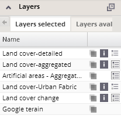
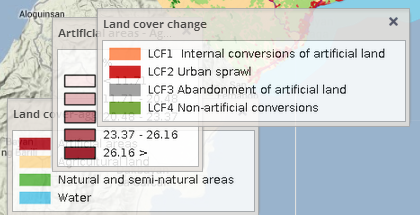
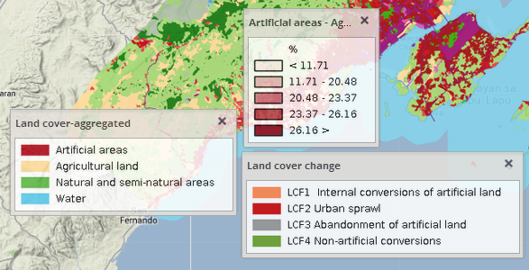

For each displayed thematic or information layer a legend can be viewed by clicking on the "open legend" icon  beside the corresponding layer from the list in the selected layers panel.
beside the corresponding layer from the list in the selected layers panel.

Legends for multiple layers can be opened at the same time – they appear in sequence in the lower left corner of the map window.

Windows with legends can be shifted anywhere in frame of the application window by dragging them, and closed either clicking again on the corresponding "open legend" icon in the selected layers panel or on the "close" button in the upper right corner of each legend window.
